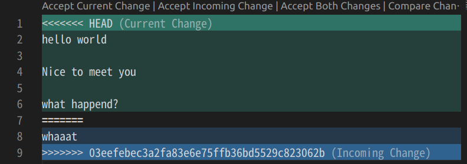
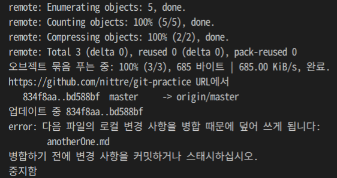
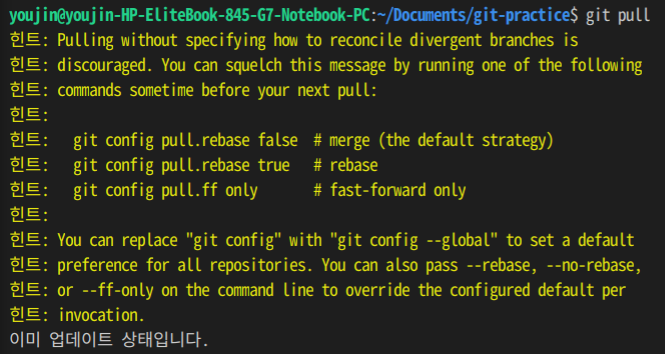
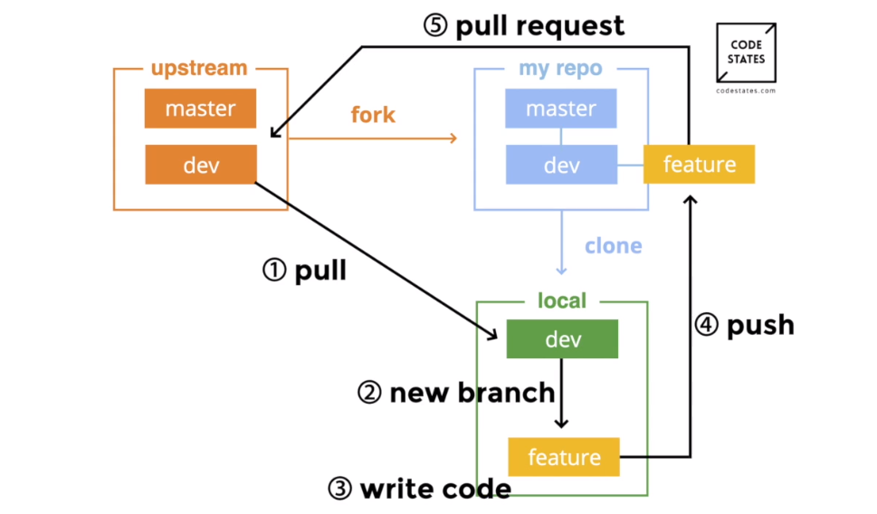
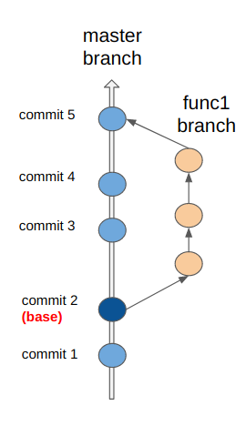
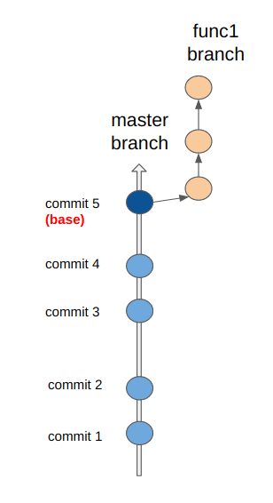

TIL 015
☕ Today Log#
✔️ Git 명령어와 프로젝트 workflow를 배웠다.
✔️ 페어와 함께 Git을 실습해보았다. Git에서는 commit한 상태를 기준으로 conflict 여부를 확인한다!
🔥 추가 공부: git rebase 공부
nano 사용법#
nano는 리눅스에서 기본 제공하는 cli editor이다. AWS 같은 원격 서버 환경에 접근하기 위해 원격에서 텍스트 파일을 편집해야 하는 상황이 발생할 수 있기 때문에 CLI editor 사용 방법을 알아두어야 한다.
$ nano hello.js # hello.js를 nano에서 연다
$ nano # nano editor를 실행한다
^R: 파일 열기
^T: 파일 탐색
^X: 파일 저장 후 종료
^O: 파일 저장
Git으로 협업하기#
- 프로젝트에서 각자 fork를 뜬다.
git clone <repo_url>로 원격 저장소에서 로컬 저장소로 가져온다- A와 B는 로컬 저장소에 서로의 원격 저장소를 자신의 로컬 저장소 pair 브랜치로 가져온다 (
git remote add pair <repo_url>) - 먼저 A가 작업을 완료한 후, 로컬 저장소의 내용을 A의 원격 저장소(origin)에 push한다. (
git push origin master); - (B는 이 변경사항으로 작업하기 위해)
git pull pair master로 자신의 로컬저장소 master 브랜치에 A의 변경사항을 반영한다 - B도 코드 작업을 완료했으면, 로컬 저장소의 내용을 커밋하고, 원격 저장소에 push한다.
Git 충돌 해결#
local과 remote의 코드가 상충되는 경우, merge conflict가 발생한다.

- HEAD 부분: current change. 내가 만든 변경사항
- HEAD 밑 부분: incomming change. 상대방으로부터 받은 변경사항.
current change 또는 incomming change를 accept 하거나, 둘 다 accept 할 수도 있다.
아무튼 conflict를 해결하고, git add를 해주면 git이 conflict를 해결했음을 확인한다.
그 외 상황#
로컬에서 commit 하지 않은 변경사항이 있는 경우
remote에 변경사항이 있고, 로컬에서 commit하지 않은 변경사항이 남아있는 상태에서 git pull을 입력하면 git은 먼저 commit하라고 말하며 pull을 진행하지 않는다.
// remote
abc
def // 여기까지 작성하고 local에서 pull 진행함
newWord // remote에서 새로 추가된 코드
// local
abc
def // remote에서 pull 해옴
blah // 아직 commit하지 않은 상태

conflict가 발생하지 않는 코드 추가
remote에서 pull을 한 후, local에서 remote 코드를 건드리지 않고 코드를 추가한 경우에는 이렇게 뜬다.
// remote
abc
def
// local - git pull 한 후 ghj 추가
abc
def // 여기까지 pull 해옴
ghj // 새로 추가

Git branch#
브랜치는 분리된 작업 영역으로, 일종의 사본이다. 브랜치는 독립된 작업 영역이기 때문에 원본이나 다른 사본에 영향을 미치지 않는다.
따라서 여러 명이 하나의 원본을 두고 작업할 때 브랜치를 만들어 해당 브랜치에서 작업하면 원본에 영향을 주지 않고 다양한 시도를 할 수 있다.
브랜치 만들기#
브랜치는 현재 작업 공간을 베이스로 만들어진다. 따라서, 내가 현재 어디서 작업을 하고 있는지 확인해야 한다. 그리고 현재 작업 공간에서 새로운 브랜치를 만들어 해당 브랜치로 작업 공간을 변경한다. 또는 기존 브랜치로 작업 공간을 옮길 수도 있다.
checkout
git checkout <branch_name>: 해당 브랜치로 작업 공간을 옮길 수 있다.git checkout -b <branch_name>: 브랜치를 생성하고 해당 브랜치로 작업 공간 이동
Git Workflow#
master repo(upstream)(master, dev branch) → (fork) → my remote repo(master, dev branch) → (clone) → local repo(dev branch) 
- 우리의 목적은 upstream branch에서 새로운 기능을 추가하는 것이기 때문에 local repo의 dev branch는 항상 최신화되어 있어야 하며, upstream의 dev branch에서 pull 해야 한다.
- 최신화된 local repo의 dev branch에서 기능 별로 새로운 feature branch를 만들어 작업한다.
- feature branch에서 작업이 완료되면 remote repo에 push하는데, 이때 주의할 점은 dev나 master branch에 push하는것이 아니라, remote repo의 feature branch에 push해야 한다는 것이다.
- 그리고 remote branch의 feature branch를 upstream repo의 dev branch에 pull request를 날린다.
- upstream repo 관리자가 이 pr을 확인하고 merge하면 하나의 기능 개발이 끝난다.
local repo에서 만든 branch를 remote repo에 올릴 수 있다.
git push <remote repo> <local branch>를 하면, remote repo에 해당 branch가 생성된다. (기존에 있는 경우 push만 됨)
Git merge와 rebase#
다음과 같이 master 브랜치와, master 브랜치에서 파생된 func1 브랜치가 있다고 가정하자

merge는 func1 브랜치의 최신 커밋을 master 브랜치의 최신 커밋과 병합한다.
$ git merge master func1

반면, rebase는 func1 브랜치의 base를 master 브랜치의 커밋으로 옮긴다. 말그대로 base를 재설정한다.
$ git rebase master func1

해당 명령어를 받으면, git은 다음의 과정을 거쳐 rebase를 수행한다.
- base에서 분기되어 추가된 func1 브랜치의 커밋들을 추려 보관한다
- func1 브랜치의 base를 master 브랜치의 최신 커밋으로 이동시킨다
- func1 브랜치에서 생성한 커밋을 새로 적용한다